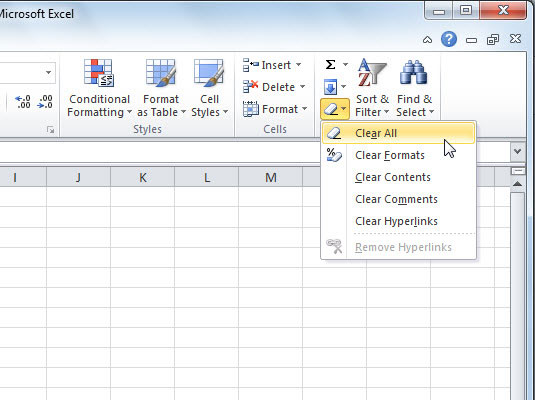

One way to remove data in Excel is to use the Clear button on the home ribbon. Choose "Clear Contents" to clear just the contents. Choose "Clear All" to clear both the contents and the formatting. A faster way to clear content is to use the delete key.
